Publications
| 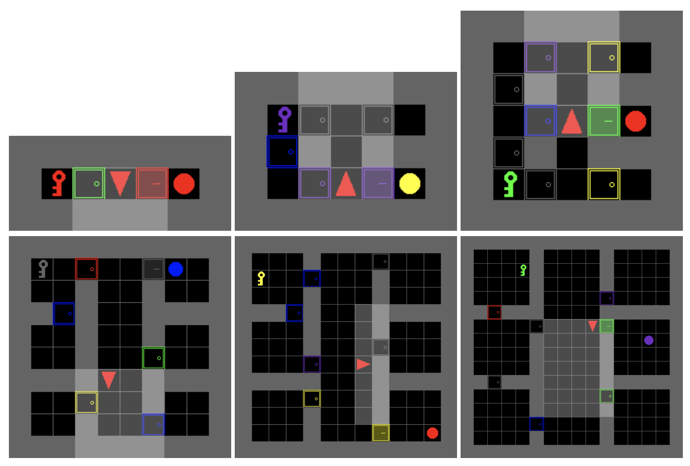 | Graph-based Impact-driven Exploration for Procedually-generated Environment Qianqian Ma, Dan Kushnir, in preparation, 2021. |
| 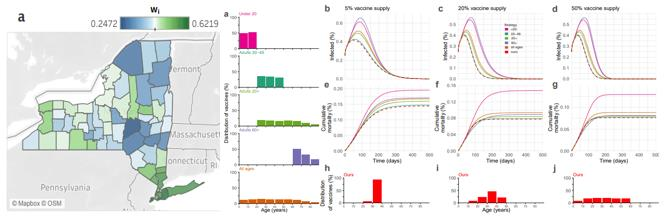 | Optimal Vaccine Allocation for Pandemic Stabilization Qianqian Ma, Yang-Yu Liu, Alex Olshevsky, Preprint. [PDF] |
| 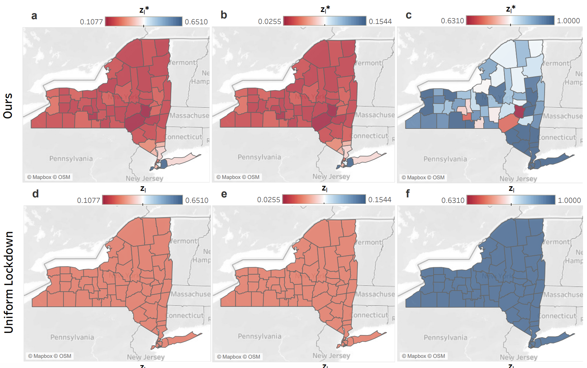 | Optimal Lockdown for Pandemic Control Qianqian Ma, Yang-Yu Liu, Alex Olshevsky, Preprint. [PDF] |
| 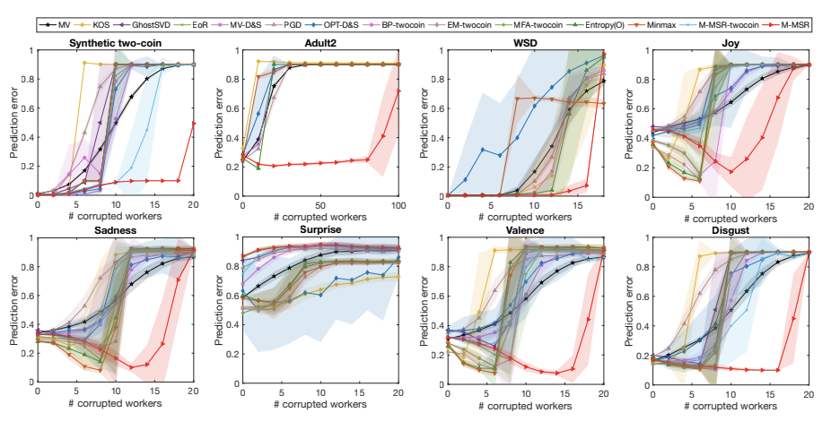 | Adversarial Crowdsourcing Through Robust Rank-One Matrix Completion Qianqian Ma, Alex Olshevsky, 2020 Neural Information Processing Systems (NeurIPS). [PDF] [code (Python)][code (Matlab)] [video] |
| 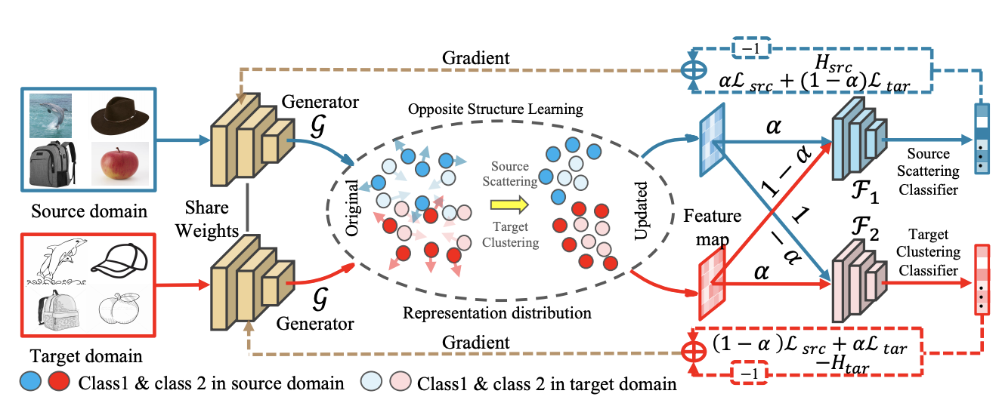 | Contradictory Structure Learning for Semi-supervised Domain Adaptation Can Qin, Lichen Wang, Qianqian Ma, Yu Yin, Huan Wang, Yun Fu 2021 SIAM International Conference on Data Mining (SDM). [PDF] |
| 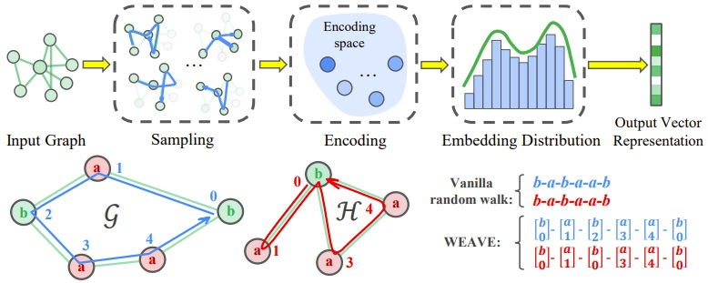 | Inductive and Unsupervised Representation Learning on Graph Structured Objects Lichen Wang, Bo Zong,Qianqian Ma, Wei Cheng, Jingchao Ni, Wenchao Yu, Yanchi Liu, Dongjing Song, Haifeng Chen, and Yun Fu, 2020 International Conference on Learning Representations (ICLR). [PDF] [code] |
| 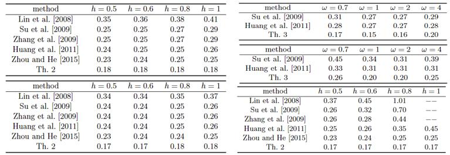 | A new fuzzy H infinity filter design for nonlinear time-delay systems with mismatched premise membership functions Qianqian Ma, Li Li, Guangcheng Ma, Daling Jia, Hongwei Xia, 2017 International Federation of Automatic Control World Congress (IFAC). [PDF] |
| 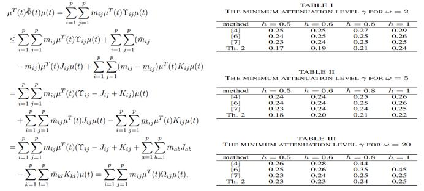 | Improved fuzzy H infinity filter design method for nonlinear systems with time-varying delay Qianqian Ma, Li Li, Junhui Shen, Haowei Guan, Guangcheng Ma, Hongwei Xia, 2017 IEEE International Conference on Systems, Man, and Cybernetics (SMC). |
| 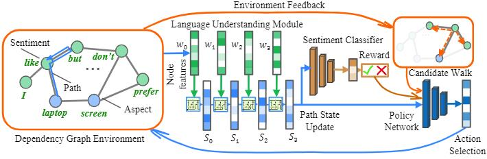 | Improved stability and stabilization criteria for T-S fuzzy systems with distributed time-delay Qianqian Ma, Hongwei Xia, Guangcheng Ma, Yong Xia, Chong Wang, 2017 International Conference of Data Mining and Big Data (DMBD). [PDF] |
| 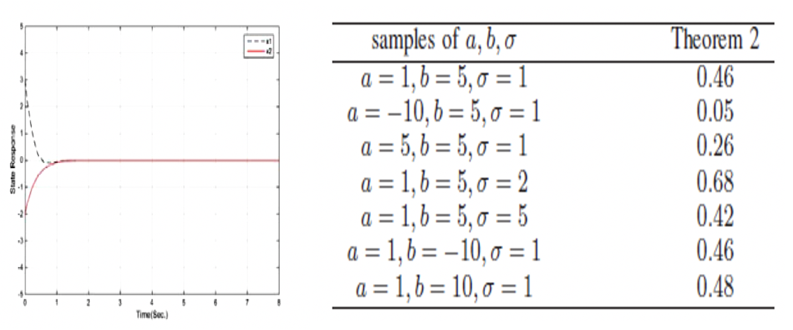 | New Results on Stability and Stabilization Analyses for T-S fuzzy systems with Distributed Time-Delay under Imperfect Premise Matching Qianqian Ma, Li Li, Hongwei Xia, Mingyang Yang, and Guangcheng Ma, 2016 International Conference on Intelligent Control and Information Processing (ICICIP). [PDF] |
| 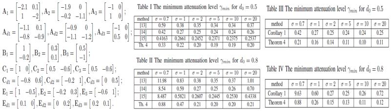 | New H infinity Filter Design Approach for Time-Delay Fuzzy-Model-Based System under Imperfect Premise Matching Li Li, Qianqian Ma, Hongwei Xia, Hongwei Xia, Guangcheng Ma, and Dali Zhang, 2016 International Conference on Intelligent Control and Information Processing (ICICIP). [PDF] |
Patent
| 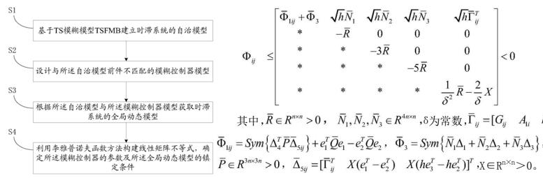 | Control methods for T-S fuzzy systems with time-delay under imperfect premise matching Changhong Wang, Hongwei Xia, Guangcheng Ma, Qianqian Ma, and Dali Zhang, granted China Invention Patent #CN201610976929.7 |